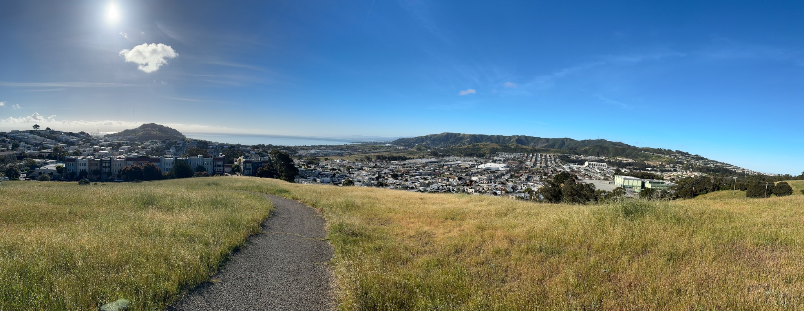

Elliot Kirschner is an Emmy Award-winning journalist, filmmaker, producer, and New York Times bestselling author. He directed The Last Class, the documentary feature about former U.S. Secretary of Labor Robert Reich and his final class at the University of California, Berkeley. Kirschner spent much of his career in broadcast journalism, including as a producer at CBS News, where his work appeared on 60 Minutes, CBS Sunday Morning, and the CBS Evening News, and later as a senior producer of Dan Rather Reports.
He has since produced and executive produced a range of documentary films focused on science, society, and democracy, including Human Nature, The Most Unknown, and Observer. He is the co-author, with Dan Rather, of the New York Times bestseller What Unites Us: Reflections on Patriotism. A native of San Francisco, he returned to the city after more than two decades away and now lives and works there.